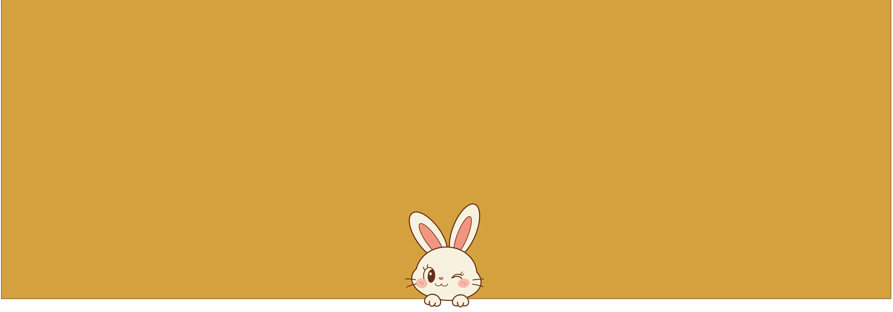
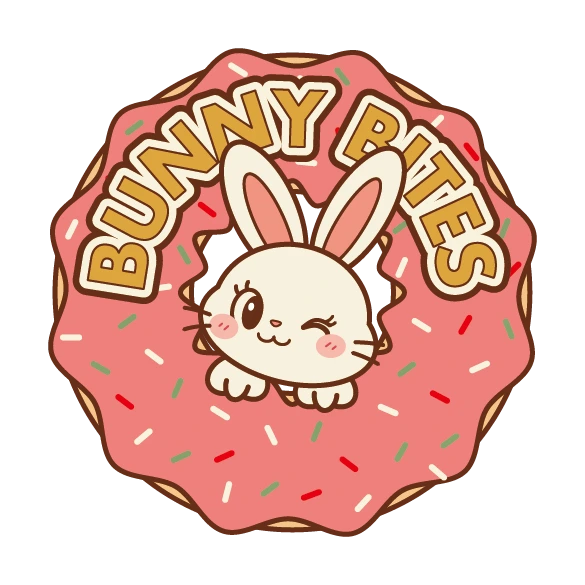

BUNNY BITES
制作期間
デザイン：1日
使用ツール
Illustrator
概要
架空のドーナツ専門店「BUNNY BITES」のロゴです。
ターゲット
20〜30代の女性や、子ども連れのファミリー層。
ちょっとしたご褒美やプレゼント、差し入れとしてドーナツを選ぶ方を想定しました。
目的
お店の「かわいくて親しみやすい」雰囲気を一目で伝え、紙袋やステッカー、SNSアイコンなど、さまざまな場面で使えるロゴにすること、贈り物にしたくなるかわいらしい印象を与えることを目的としました。
あわせて、Illustratorの基本的な描画・編集機能を使いこなせることを示すことも目的にしました。
コンセプト
「ドーナツの穴からうさぎが顔を出す」という構図で、店名の「BUNNY」と商品の「BITES」が一目で結びつくようにしました。
キャラクターは「ドーナツが大好きな食いしん坊のうさぎ」をイメージし、ほっぺをぷっくりさせた美味しそうな表情とウインクで、見る人の食欲と親しみを引き出すようにしました。
デザイン
プレゼントや差し入れとして持って行きたくなるような、かわいらしさを意識しました。
色は原色を避け、彩度を少し抑えたピンク、クリーム、マスタードイエロー、ブラウンにまとめ、大人っぽくかわいいレトロな雰囲気にしました。
店名はパス上文字ツールでドーナツの円周に沿わせ、ドーナツの色合いになじませつつ、アウトラインを工夫して読みやすさを保ちました。
まつげや口の線は端を丸くして、温かみのある手描きの印象にしました。トッピングは角度や位置をあえて不揃いに散らし、手作り感を出しました。
